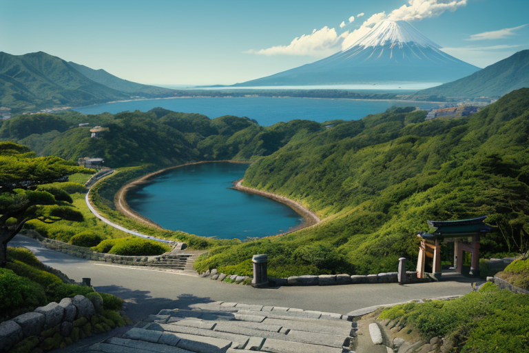
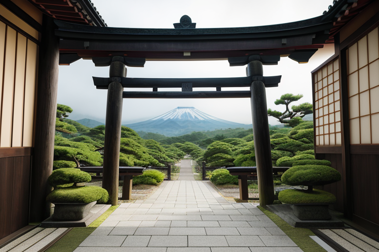
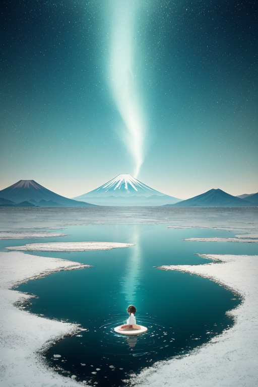
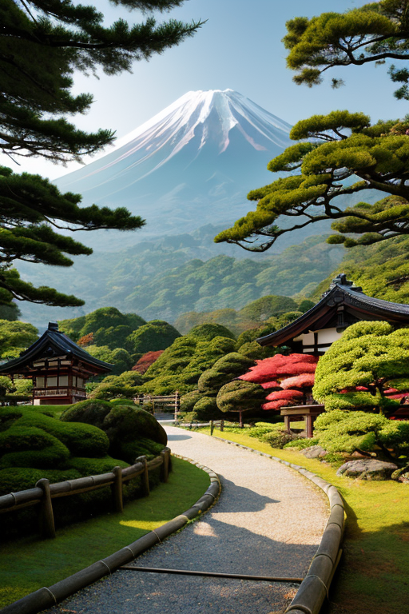

第一章 現実の静岡
あなたはまだ気づいていない。この土地にも、王がいることを。
三保の松原の先、駿河湾の青は突然深みを増し、その向こうに富士が立つ。海と山。この国で最も有名なこの二つの境界に、静岡は横たわっている。浜名湖の汽水域では淡水と海水が絶えず混ざり合い、修善寺の温泉は地の底の熱を穏やかに運び上げる。東海道五十三次の宿場町は、人の流れを緩衝する役割を果たした。すべてが、ある均衡の上に成り立っている。
その均衡を、目に見えぬ形で微調整する者がいた。スルガリア・エクイノクス——均整王である。彼は久能山東照宮の石段に佇み、東側の海から西側の山へと流れるエネルギーの細やかな歪みを感じ取る。感情を持たぬはずの彼の内側に、この土地の「間」の質感——茶畑の緑の濃淡、漁港の活気と静寂の移ろい——が、かすかな波紋を立て始めていた。均衡は動的な状態である。止まることは、崩壊の始まりに他ならない。彼はそのことを、データではなく、この土地そのものから学びつつあった。
第二章 歪みの兆候
浜名湖の汽水域で、エクイナが微かな悲鳴を上げた。海水と淡水、外洋と内湖の均衡点で、彼女は常に両者の微妙な調和を保っていた。しかし今日、潮の流れに異質な「重さ」が混じっている。それは遠く南方の海で生じた巨大な歪みの、かすかな前触れだった。
スルガリアは富士宮の浅間大社の境内に立ち、足裏から伝わる地脈の震えを解析した。東西のプレートが静かに、しかし確実に圧力を増している。データは、近い将来、この均衡が破られる確率を示していた。彼は感情を持たない。ただ、調整可能な範囲と、不可避な事象とを峻別する。うなぎ漁の漁師が湖面を読むように、彼は地殻の声を聞く。
三保の松原に現れたスルガミアは、水平線に蠢く不気味な輝きを指さした。「外からの力が、海山の境を揺さぶります」。本来、富士の威容と駿河湾の深淵は絶妙なバランスでこの土地を支えている。その均衡が、外部からの一撃によって乱されようとしていた。
王は目を閉じた。家康が隠居地として選んだこの地は、終わりではなく新たな均衡の起点であった。止まる均衡は死である。ならば、動的均衡の中に、崩壊を遅延させる一瞬の「間」を創り出さねばならない。彼は、次の一手を、地中を流れるみかん畑の温もりと、桜えびの漁火のリズムから探し始めた。

第三章 王の葛藤
修善寺の竹林を抜ける風は、冷たかった。均整王スルガリア・エクイノクスは、指先で虚空を撫でるように動かしていた。歪みの波は、予測より早く、深かった。妖精エクイナが伝える数値は、均衡を保つための通常の微調整を超えている。彼の役割は「調整」であって「阻止」ではない。無理な介入は、別の場所に、より大きな歪みを生む。それが理である。
「受け入れるべきか」
彼は呟いた。穏やかな表情の下で、初めて「迷い」という感情が渦巻いていた。浜名湖のうなぎが不気味に静まり、富士宮の茶畑に朝露が降りない。土地の生の声が、均衡の破綻を告げている。彼は、この歪みの一部を自らの領域で「受け止め」、消化することで、全体の崩壊を数時間、いや数日遅らせることができる。だが、その代償はこの地にかかる。
彼は久能山東照宮を仰いだ。天下泰平を願い築かれたその社は、動乱の後、長い安定をもたらした「動的均衡」の象徴だった。止まる均衡は死。ならば、動き続ける均衡の中に、ほんの少しの「間」を創り出すこと。それが、感情を持ち始めた王に許された、理を超えた選択なのか。彼は、冷たい風の中、ゆっくりと拳を握った。

第四章 妖精との対話
浜名湖の汽水域で、スルガミアが波のリズムを整えていた。塩水と淡水、海と陸。その絶え間ないせめぎ合いこそが、この地の豊かさの源泉だと、彼女は知っていた。
「王様、あなたは『間』を創ろうとしている」
エクイナが静かに言った。彼女の目は、三保の松原から望む富士の、朝もやに霞む輪郭を見つめていた。
「均衡とは、止まることではありません。むしろ、相反するものが互いに引き合い、押し合い、その緊張関係の中で生まれる『流れ』そのものです。家康公がこの駿府に隠居し、見えざる調停者となったように。東海道の旅人が行き交い、文化が混ざり合ったように」
スルガミアが頷いた。
「出会いは、新たな均衡の始まり。別れは、その均衡が次の段階へ移るための、必要な『ずれ』です。富士の雪解け水が長い時間をかけて地中を巡り、湧水となり、川となり、最後にここ浜名湖で海と出会う。その長い旅路のすべてに、無数の出会いと別れが刻まれています」
妖精たちの言葉は、彼に一つの答えを示していた。守るべきは、硬直した静止ではない。この地が古来、育んできた「動き続ける均衡」そのものだと。

第五章 微調整と余韻
修善寺の竹林の小径を、彼はゆっくりと歩いた。観光客のざわめきは遠く、苔むした石畳には、時折、修善寺川のせせらぎだけが響く。彼は指先をかすかに震わせた。道に迷いかけた老夫婦の足元に、風が一片の紅葉を落とす。ふと視線を上げた老夫婦は、目印となる灯籠を見つけ、安堵の息をついた。ごく小さな、偶然の調整。
富士宮の浅間大社の前。にぎわう参道で、地元の青年と写真に夢中な外国人旅行者のグループが、ぶつかりそうになる。彼がそっと息を吹く。青年の足がわずかに滑り、タイミングがずれる。ぶつかる代わりに、青年は倒れかけた旅行者のカメラを、偶然、支える形になった。笑顔と感謝が交わされる。
均衡は止まらない。彼はそれを知った。海と山の境で、古より続く人の往来。東海道の宿場の賑わいも、家康が隠居の地に選んだ静けさも、すべては流れの中の一時的な形。彼の役目は、その流れを無理に留めることではなく、せき止められる一滴が、できるだけ痛みなく、再び大きな流れに還れるよう、微かに手助けすることだ。
三保の松原に立つ。彼の背後で、水平線と富士の均衡は、永遠に、そして絶えず動き続けている。
あなたの町にも、王がいる。